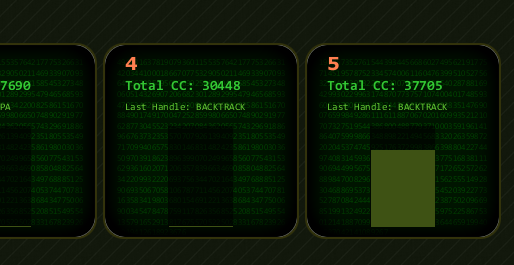
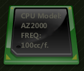

|

|
CPU Consumption visualization will visualize the simulated CPU that each simulated agent is consuming
on a given frame
as can be seen in the image on the left - each agent is represented by a single element
on the top of the element the information about the total number of CCs used is printed
and below it the information about the last message that was handled is shown,
lastly the bar on the bottom show the percentage of the simulated CPU that is used
|

|
the simulated CPU is able to perform 100 constraint checks per frame
|
|